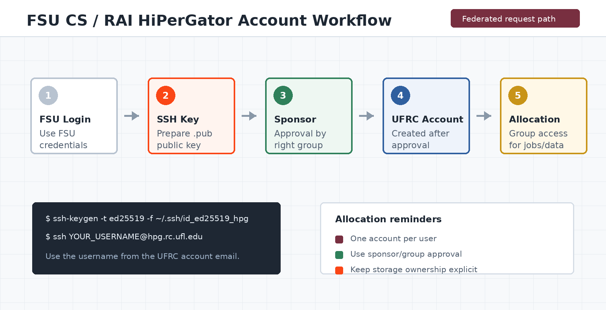

确认 sponsor/group
先问 PI、lab manager 或 FSU CS group manager，确认应由哪个 HiPerGator sponsor 批准。
FSU CS / RAI
给 FSU CS / RAI 新用户、PI 和 group manager 的 ready-to-use 版本：从 federated 申请到 sponsor 审批、SSH 登录、allocation 加组，一页完成。
最后核对日期：2026-09-02

Quick Path
先问 PI、lab manager 或 FSU CS group manager，确认应由哪个 HiPerGator sponsor 批准。
在本机生成 `.pub` public key 文件，后续按邮件流程上传。
选择 Florida State University，用 FSU credential 登录并填写申请表。
邮箱确认、同意条款、上传 public key 后，等待 sponsor approval 和 UFRC 创建账号。
Choose Entry
选择 Federated Account Request。FSU 在 UFRC federated liaison 列表中，通常可用 FSU credential 登录。
选择 UF Account Request。这条路径适合已经有 UF 身份的用户。
若不能走 federated login，通常要先申请 affiliate GatorLink；官方说明提到繁忙时期可能需要最多两周。
Before Applying
如果不知道 sponsor/group 名称，不要猜。普通用户的账号申请需要已有 sponsor/group/resource allocation 支持；如果 sponsor 还没有 HiPerGator sponsor record、primary group 和资源，普通用户账号不会被创建。
SSH Public Key
ssh-keygen -t ed25519 -C "your_fsu_email@fsu.edu" -f ~/.ssh/id_ed25519_hipergator
cat ~/.ssh/id_ed25519_hipergator.pubssh-keygen -t ed25519 -C "your_fsu_email@fsu.edu" -f $env:USERPROFILE\.ssh\id_ed25519_hipergator
type $env:USERPROFILE\.ssh\id_ed25519_hipergator.pub只上传 `.pub` public key 文件。不要分享没有 `.pub` 后缀的 private key。Federated account request 流程会要求上传 public key，即使之后主要使用 Open OnDemand、JupyterHub 或 Galaxy 等网页入口。
Submit Request
I am an FSU CS / RAI researcher requesting HiPerGator access for project work under the relevant FSU CS sponsored group. Please add me to the appropriate group/allocation after sponsor approval.上传 SSH public key 后，UFRC 会通知 sponsor 审批。账号不会在 sponsor 确认前创建。官方说明中，sponsor 确认后账号创建通常需要 2-3 个工作日。
After Approval
先完成 HiPerGator 要求的新用户 training/onboarding，然后验证登录。
ssh -i ~/.ssh/id_ed25519_hipergator YOUR_HIPERGATOR_USERNAME@hpg.rc.ufl.eduFederated 用户的 HiPerGator username 可能不是 FSU email 前缀，以开通邮件为准。
UFRC 文档说明 federated 用户 SSH login 通常需要 SSH key；必要时先连接 eduVPN。
登录后确认默认 group、Slurm account、storage path，以及是否需要 umbrella compute allocation。
Department Allocation
附件中的 2026 年 1-3 月邮件线程讨论的是 FSU CS department-level umbrella investment，用于多个 FSU CS research groups 共享，而不是某一个人的个人账号申请。
NCU
BSU
OSU
NGU
邮件线程中的更新后总报价
RAI / FSU CS
FAQ
不要随便选一个 sponsor。先问 PI/group manager 确认准确名称。如果这是新 group，可能需要 sponsor 先申请 sponsor-level HiPerGator account 和资源。
检查 spam/junk，确认 sponsor 是否已经收到并批准确认请求。仍然卡住时，开 UFRC support ticket，写清姓名、institutional email、提交日期和 sponsor/group。
不要重新申请账号。让 allocation owner 或 group manager 把已有 HiPerGator username 加到对应 group。
Official References